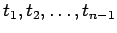
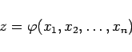
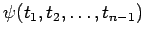
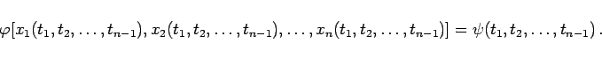

Inhalt Index DeskTop Bronstein

 Differentialgleichungen Partielle Differentialgleichungen Partielle Differentialgleichungen 1. Ordnung Lineare partielle Differentialgleichungen 1. Ordnung
Differentialgleichungen Partielle Differentialgleichungen Partielle Differentialgleichungen 1. Ordnung Lineare partielle Differentialgleichungen 1. Ordnung


Gegeben sind n Funktionen von n-1 unabhängigen Variablen :
Das CAUCHYsche Problem für die Differentialgleichung (9.68a) besteht darin, eine Lösung
|  | (9.72b) |
zu bestimmen, die beim Einsetzen von (9.72a) eine vorgegebene Funktion  ergibt:
|  | (9.72c) |
Im Falle zweier Variabler reduziert sich das Problem auf das Aufsuchen einer Integralfläche, die durch eine gegebene Kurve verläuft. Wenn diese Kurve eine stetige Tangente hat und in keinem Punkt eine Charakteristik berührt, dann besitzt das CAUCHYsche Problem in einer gewissen Umgebung dieser Kurve stets eine eindeutige Lösung. Dabei besteht die Integralfläche aus der Menge aller der Charakteristiken, die die gegebene Kurve schneiden. Eine exaktere Formulierung des Satzes über die Existenz der Lösung des CAUCHYschen Problems s. Lit. 9.26.
| Beispiel A |
|
Für die lineare inhomogene partielle Differentialgleichung 1. Ordnung |
| Beispiel B |
|
Es sind die Integralflächen der linearen inhomogenen Differentialgleichung 1. Ordnung |